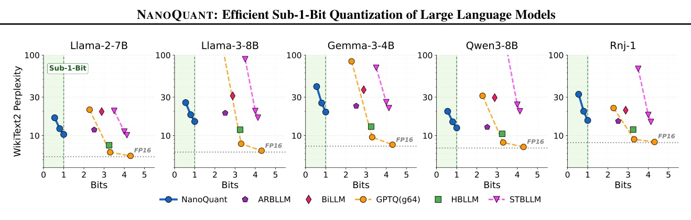
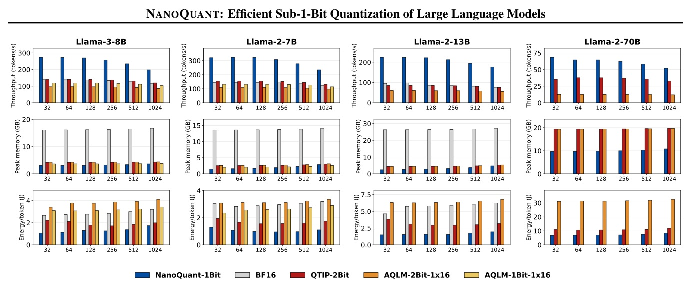
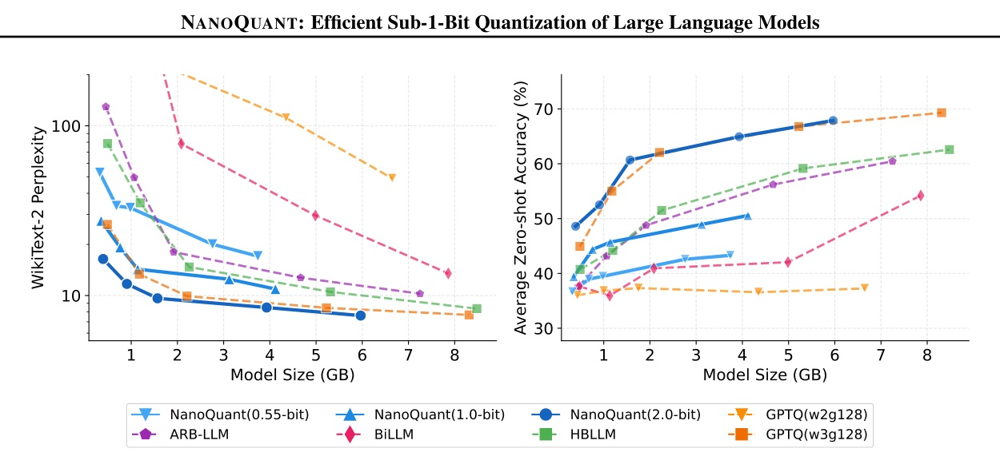

一個把 LLM 壓到 1-bit / sub-1-bit 的 PTQ pipeline：LB-ADMM 初始化、block reconstruction、scale-only global calibration。

NANOQUANT 的重點不是「硬把權重變 1-bit」；而是把 dense weight 改寫成 兩個 binary low-rank factors + channel scales。
這篇真正的 mechanism 是：好初始化 讓小資料 PTQ 不必靠 QAT 的海量 token 來救。
| Axis | Setting |
|---|---|
| Hardware | 1x NVIDIA H100 80 GB for quantization/eval; RTX 3050 8 GB + Jetson TX2 for deployment |
| Model families | Llama-2/3, Gemma 3, Qwen3, Rnj-1; 0.6B to 70B |
| Calibration | 128 WikiText-2 samples, seq len 2048 = 0.26M tokens |
| Metrics | WikiText-2 perplexity; zero-shot average over ARC-e/c, BoolQ, HellaSwag, WinoGrande, PIQA |
| Method | Scheme | Bits | Model size | Data | GPU h | PPL ↓ |
|---|---|---|---|---|---|---|
| GPTQ W2g64 | PTQ | 2.28 | 2.37 GB | 0.26M | 0.1 | 21.00 |
| HBLLM_R | PTQ | 3.25 | 3.16 GB | 0.26M | 2.2 | 7.60 |
| LittleBit | QAT | 1.04 | 1.33 GB | 196M | 123.6 | 9.08 |
| NANOQUANT | PTQ | 1.00 | 1.33 GB | 0.26M | 1.7 | 10.34 |
| NANOQUANT + more cal | PTQ | 1.00 | 1.33 GB | 2.10M | 2.5 | 8.85 |


| Initialization | PPL ↓ | Zero-shot ↑ |
|---|---|---|
| Dual-SVID | 167.73 | 35.11 |
| DBF ADMM | 30.27 | 37.20 |
| LB-ADMM (Ours) | 20.06 | 39.29 |
| Stack | Recon. | PPL ↓ | Zero-shot ↑ |
|---|---|---|---|
| Init only | none | 206.03 | 36.89 |
| + error mitigation | block | 15.07 | 46.40 |
| + factor refinement | block | 15.00 | 47.88 |
| + both block modules | block | 13.58 | 46.75 |
| + model reconstruction | global scale | 12.47 | 48.94 |
| Model | Method | Data | GPU h | PPL ↓ | Zero-shot ↑ |
|---|---|---|---|---|---|
| Qwen3-4B | LittleBit | 169.50M | 92.5 | 14.79 | 47.32 |
| Qwen3-4B | DBF | 1.19B | 25.3 | 14.62 | 52.30 |
| Qwen3-4B | NANOQUANT | 1.05M | 2.3 | 12.62 | 50.63 |
| Llama-2-7B | NANOQUANT | 1.05M | 2.1 | 9.01 | 51.01 |
| Target | Method | Bits | Data | PPL ↓ | Zero-shot ↑ |
|---|---|---|---|---|---|
| 2-bit | QTIP | 2.02 | 12.58M | 6.29 | 62.05 |
| 2-bit | AQLM+PV | 2.02 | 8.00M | 5.84 | 61.35 |
| 2-bit | NANOQUANT | 2.00 | 1.05M | 6.52 | 59.09 |
| 1.5-bit | NANOQUANT | 1.50 | 1.05M | 7.08 | 55.81 |
| 1-bit | NANOQUANT | 1.00 | 1.05M | 8.99 | 47.81 |
NANOQUANT formulates quantization as a low-rank binary factorization problem, and compresses full-precision weights to low-rank binary matrices and scales.
NANOQUANT 把量化寫成低秩二元分解問題，用低秩二元矩陣與尺度向量取代 full-precision 權重。Abstract p.1
With only 128 calibration samples (0.26M tokens) and 1 GPU, NANOQUANT achieves sub-binary compression.
只用 128 個 calibration samples（0.26M tokens）與 1 張 GPU，就能做 sub-binary compression。Intro p.2
NANOQUANT compresses the Llama-2-70B model from 137.95 GB to 5.75 GB, representing a 24x compression factor.
Llama-2-70B 從 137.95 GB 壓到 5.75 GB，壓縮 24x。§4.4 p.7
Among all equivalent rescalings ... the value η* = sqrt(||V||F / ||U||F) minimizes the total factor magnitude.
在所有等價縮放中，η* 會最小化總 factor magnitude，讓兩個 factor 的 Frobenius norm 平衡。Appendix A p.14
週六輪轉：AI Agent framework / multimodal systems